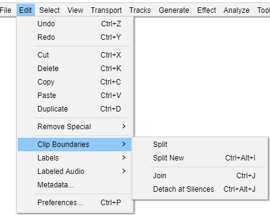

Edit Menu: Clip Boundaries
- Click, or hover, on any menu item in the image to read about that command. Skip the image
- 
Split Ctrl + I
Splits the current clip into up to three clips at the selection boundaries. The audio before, within, and after the selection can now all be shifted independently
Split New Ctrl+ Alt + I
Does a Split Cut on the current selection in the current track, then creates a new track and pastes the selection into the new track.
Join Ctrl + J
If you select an area that overlaps one or more clips, they are all joined into one large clip. Regions in-between clips become silence.
Detach at Silences Ctrl + Alt + J
In a selection region that includes absolute silence and other audio, creates individual non-silent clips between the regions of silence. The silence in the selection becomes blank space between the clips.
If the selection is entirely silence, it becomes blank space between the audio either side of the selection.